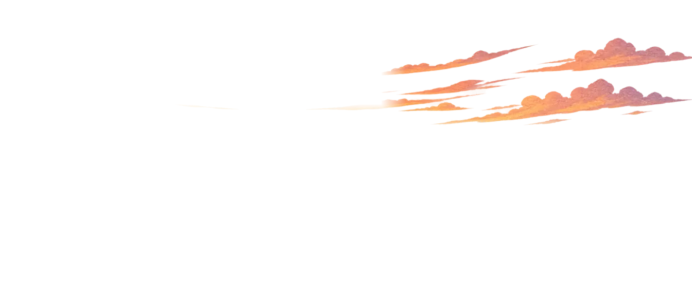

Halaman 1 dari 3

Malam di puncak
Goal tercapai saat semuanya terbukti
Setiap goal di Pathway berjalan di jalur yang sama: tentukan goal, jalankan habit dan to-do, refleksikan, lalu buktikan. Kamu selalu tahu sedang di pos mana dan apa langkah berikutnya.
- 11.240 mdpl
Tentukan goal
Satu hal yang ingin kamu capai, alasannya, dan tenggat waktunya.
- 21.780 mdpl
Jalankan habit dan to-do
Maksimal tiga action item sehari. Cukup 80% hari terpenuhi.
- 32.450 mdpl
Refleksi
Tulis apa yang berhasil, apa yang sulit, dan langkah berikutnya.
- 3.142 mdpl
Buktikan
Unggah sertifikat, foto, atau link. Goal tercapai jadi achievement.
Goal tercapai saat habit terbentuk, to-do selesai, dan bukti terunggah.